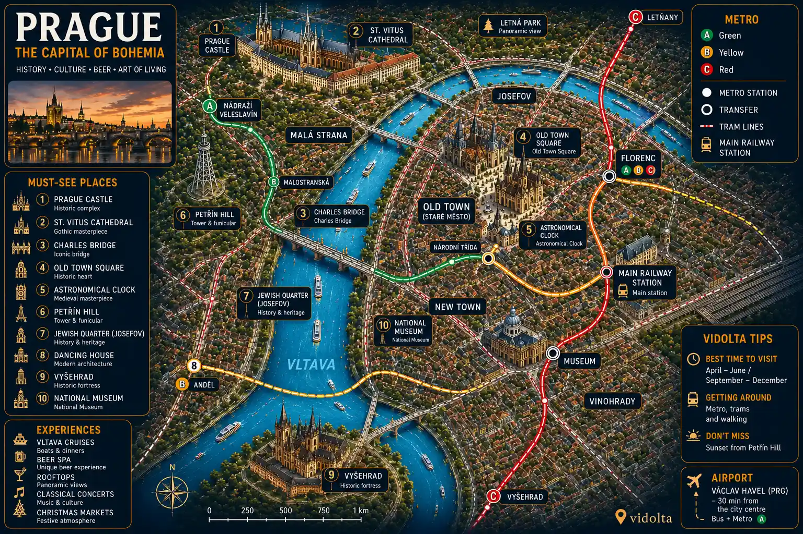
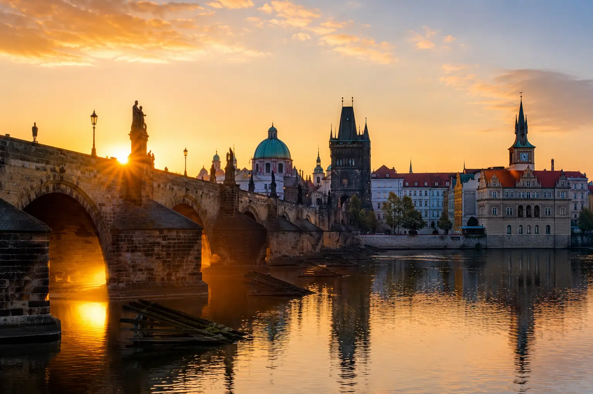
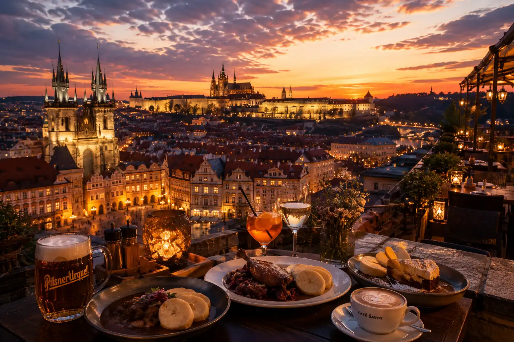
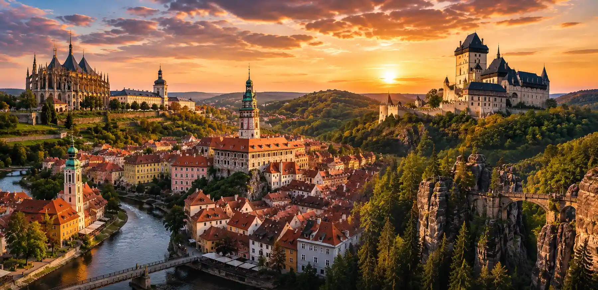
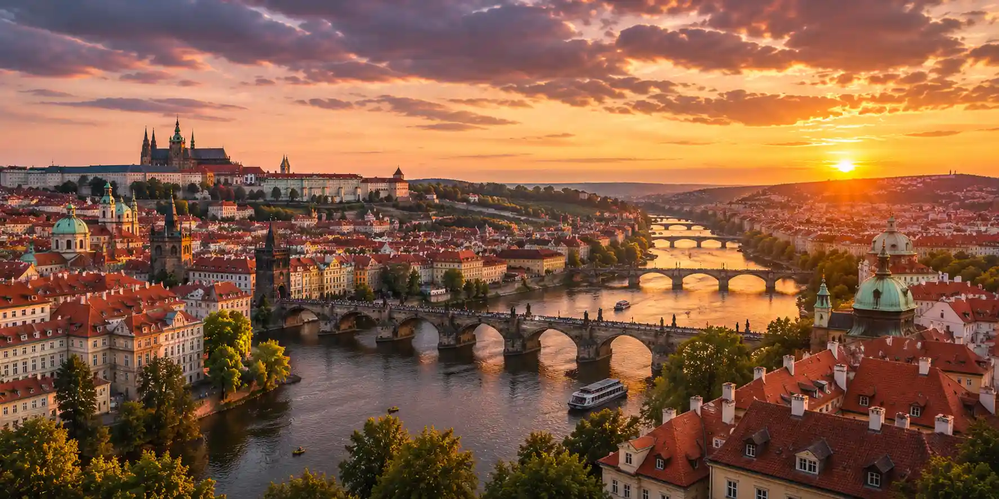

Prague lights up Europe with its medieval magic
Explore Prague through its castle, medieval streets, and Gothic architecture.
Charles Bridge • Castle • Old Town • Czech beer • Vltava
One of Europe’s most famous bridges, magical at sunrise.
A vast historic complex overlooking the city’s red rooftops.
Historic breweries, beer spas and traditional bars in the heart of Prague.
Old Town, Malá Strana and Vinohrady are easy to explore.
Prague is one of Europe’s most romantic and mysterious cities. Capital of Czechia, it blends Gothic architecture, medieval streets, historic bridges, castles and a bohemian atmosphere.
From the Old Town to Prague Castle, from the Old Town to Malá Strana, each neighborhood reveals a different atmosphere, with colorful façades, lively squares and spectacular views over the Vltava.
Between cultural visits, Czech breweries, river cruises, rooftops, classical concerts and Christmas markets, Prague offers an accessible, magical and truly atmospheric city break.

Beyond Charles Bridge and Prague Castle, some experiences reveal a more authentic, more romantic and often more memorable side of Prague than the classic visits.

Before visitors arrive, Charles Bridge reveals all its magic. Historic statues, Gothic towers and reflections on the Vltava create one of Europe’s most beautiful atmospheres.
A cruise lets you admire the historic bridges, Prague Castle and the colorful façades of the Old Town from a completely different perspective.
Discover the experience →Overlooking the city for more than a thousand years, the largest castle complex in the world offers exceptional views and a journey through Czech history.
Book the visit →Beneath the streets of the Old Town lies a fascinating network of cellars, passages and medieval halls dating back several centuries. A unique dive into Prague’s secret history.
Discover the experience →Between the astronomical clock, cobbled streets and colorful façades, Prague’s historic center is best explored without a fixed itinerary.
Prague is one of Europe’s great capitals of classical music. Churches, palaces and historic halls host concerts almost every evening.
Book the concert →Nicknamed Prague’s little Eiffel Tower, Petřín Tower offers one of the most beautiful views over the red rooftops, church spires and the Vltava.
Book the visit →From the city’s best rooftops, Prague’s church spires, domes and bridges create a spectacular panorama, especially at sunset.
Use the historic trams, metro and buses to explore Prague quickly and affordably.
ExploreTravel easily between Prague, Vienna, Budapest, Berlin and the major cities of Central Europe.
ExploreThe Old Town, Malá Strana and the Castle District are best discovered on foot through the city’s historic streets.
ExploreReach your hotel easily from Václav Havel Airport with a comfortable, stress-free private transfer available at any time.
Book the transfer →The historic heart of Prague. Perfect for a first visit, with the Astronomical Clock, Old Town Square and Charles Bridge all within walking distance.
Located at the foot of Prague Castle, this romantic district is known for its Baroque palaces, cobbled streets and peaceful atmosphere.
An elegant neighborhood loved by locals for its cafés, restaurants, parks and authentic atmosphere, while remaining close to the historic center.
Surrounding Prague Castle, this area offers spectacular views over the city and a unique atmosphere at the heart of Czech heritage.
An excellent balance between sightseeing, shopping, transport and nightlife. Ideal for enjoying Prague while staying in a central location.
Compare accommodation in Prague's best neighborhoods.
From historic breweries and traditional Czech cuisine to elegant cafés and panoramic rooftops, food is an essential part of the Prague experience.

Prague is one of the world's beer capitals. Its historic breweries offer the perfect opportunity to discover Czech flavors in an authentic and welcoming atmosphere.
Goulash, svíčková, knedlíky and local specialties provide a true taste of Czech culinary traditions.
View restaurants →With illuminated squares, historic façades and cobbled streets, the restaurants of Prague's Old Town create a unique atmosphere after sunset.
Prague's cafés continue a rich cultural tradition where writers, artists and intellectuals once gathered over coffee and pastries.
Enjoying a drink with views of the red rooftops, church spires and Prague Castle is one of the city's most memorable experiences.
Discover the best spots →Beyond its historic center, Prague is an excellent base for discovering Bohemia's most remarkable castles, medieval towns and natural landscapes.

A UNESCO World Heritage Site, Kutná Hora is famous for the Sedlec Ossuary, St. Barbara's Cathedral and its rich mining history.
Book the tour →Built in the 14th century by Charles IV, this medieval castle overlooks the wooded hills of Bohemia and is one of the most popular day trips from Prague.
Book the tour →Often considered the most beautiful town in Czechia, Český Krumlov charms visitors with its monumental castle, medieval streets and winding river.
Book the tour →Sandstone cliffs, wild gorges, deep forests and spectacular viewpoints make this national park one of Central Europe's most beautiful natural areas.
A few practical tips will help you prepare your trip to Prague, whether you're planning your sightseeing, budget or choosing the best time to visit.
Czech is the official language. In tourist areas, English is widely spoken in hotels, restaurants and major attractions.
Czechia uses the Czech koruna (CZK). Credit cards are accepted almost everywhere, but carrying a little cash is still useful.
Prague uses Type C and Type E power sockets with a 230 V supply. European travelers generally do not need an adapter.
Two to three days are enough to discover Prague's main attractions. Four to five days allow more time to explore the neighborhoods and surrounding region.
Spring, summer and early autumn are especially pleasant. Prague's Christmas markets also make the city magical during winter.
Prague remains one of Europe's most affordable capitals. Plan on spending around €80 to €180 per day depending on your accommodation, activities and dining choices.
Prague blends medieval architecture, European history, Czech culture, local gastronomy and a uniquely romantic atmosphere.
Between Charles Bridge, the cobbled streets, the red rooftops of the Old Town, historic breweries and views over the Vltava, Prague offers one of the most magical atmospheres in Europe.
Trams, the metro and walking make it easy and affordable to explore Prague.
The Old Town, Malá Strana and Vinohrady are home to many breweries, traditional Czech restaurants and historic cafés.
Prague Castle, the Old Town, Vltava river cruises, classical concerts and panoramic views over the red rooftops are all must-see experiences.
